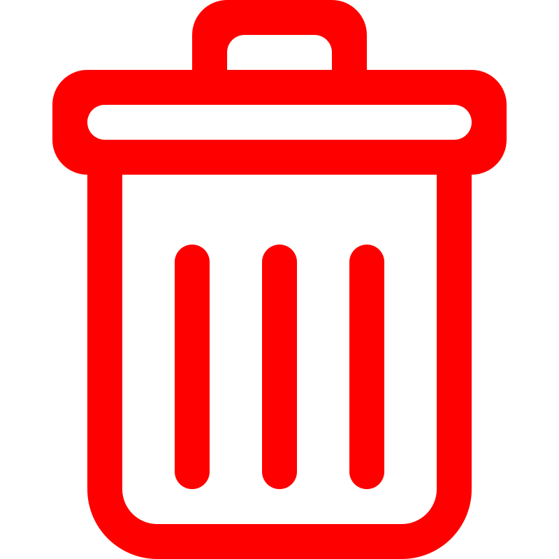

<ion-header [translucent]="true">
  <ion-toolbar>
    <ion-title>
      Usuários
    </ion-title>
  </ion-toolbar>
</ion-header>

<ion-content [fullscreen]="true">
  <ion-header collapse="condense">
    <ion-toolbar>
      <ion-title size="large">Users</ion-title>
    </ion-toolbar>
  </ion-header>

  <ion-list>
    <ion-item *ngFor="let user of users">
      <ion-avatar aria-hidden="true" slot="start">
        
      </ion-avatar>
      <ion-label>{{user.name}} <span *ngIf="user.profile?.name == 'Admin User'">-<strong> {{user.profile?.name}} </strong></span></ion-label>
      <div class="actions">
        <ion-button color="light" (click)="openForm(user)">
          
        </ion-button>
        <ion-button color="light">
          
        </ion-button>
      </div>
    </ion-item>
  </ion-list>

  <ion-fab class="form-button" (click)="openForm()">
    <ion-fab-button>
      <ion-icon name="add"></ion-icon>
    </ion-fab-button>
  </ion-fab>

</ion-content>
